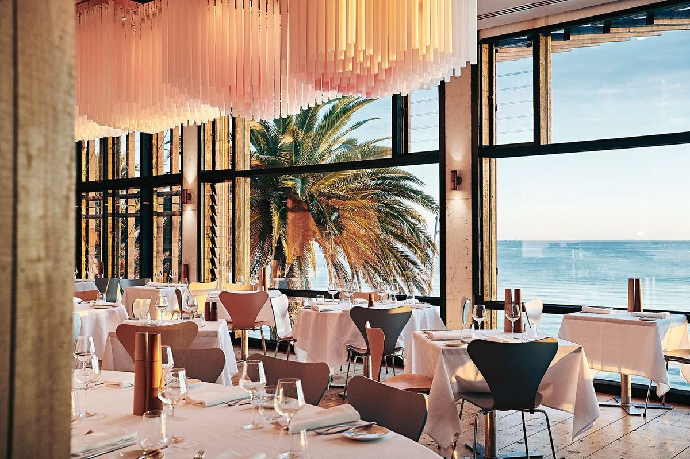

Welcome to Kenji's Guide website!
Discover & Reserve the Best Dining Experiences of many restaurants in Melbourne recommended by Kenji.
Your ultimate culinary companion for finding perfect tables, customized recommendations, and seamless dining bookings.

Our Purpose & Values
At Kenji's Guide, we value convenience, variety, accessibility, and exceptional dining experiences. We also bridge the gap between hungry food lovers and premium local culinary institutions.
Who We Serve
Whether you are looking for family-friendly weekend spots, romantic couples' backdrops, sharp professional business lunch environments, or authentic local flavors for tourists, we have something curated just for you.
What We Offer
- Restaurant Discovery: Dive into comprehensive menu breakdowns and pricing upfront.
- Good Recommendations: Rule-based systems built around your dietary requirements and budget limits.
- Fast Reservations: Secure booking systems supporting flexible payment channels.